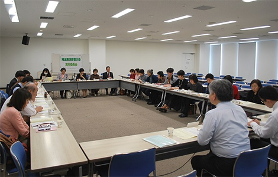

|
|
4月17日(金)13時30分より、浦和コミュニティセンターにて第51回埼玉県消費者大会第1回実行委員会が開催され、26人(16団体)と事務局2人が参加しました。  ■議 題 1．各団体参加者の自己紹介 2．岩岡事務局長あいさつ 100回に向けた折り返しの大会になります。高齢者の見守り、医療、福祉の問題等ありますが、消費者団体がどう役割を果たすのか課題です。賢い消費者になるために学びながら取り組んでいきましょう。 3．運営体制と日程について （1）運営体制
（2）第51回埼玉県消費者大会日程と会場：9月25日(金)埼玉会館 4．第50回埼玉県消費者大会の決算報告・第51回埼玉県消費者大会分担金(案) 5．記念講演について 講師を樋口恵子さんで確認できたことを報告。講演のテーマについて意見交換し、｢子どもの貧困｣｢高齢者社会の中での高齢者の貧困｣｢高齢者が直面している不安・悩み｣等のキーワードが出されました。 6．プレ学習会について
7．分科会テーマ、消費者大会に向けた検討スケジュールについて 実行委員会メンバーの｢何をやりたいのかが大切｣との声もあり、分科会テーマについて活発な意見交換を行いました。 8．｢市町村における消費生活関連事業調査｣の実施について、確認しました。 9．県内消費者団体交流会について
|